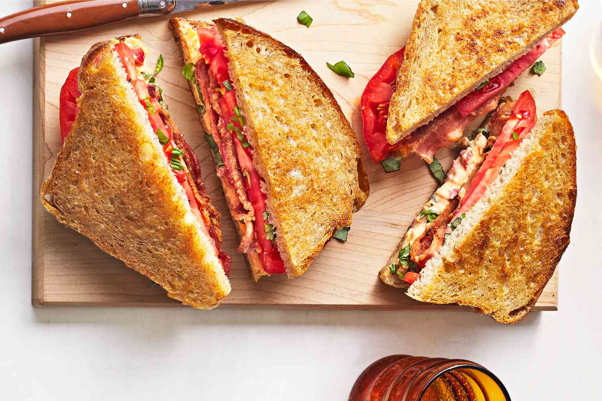
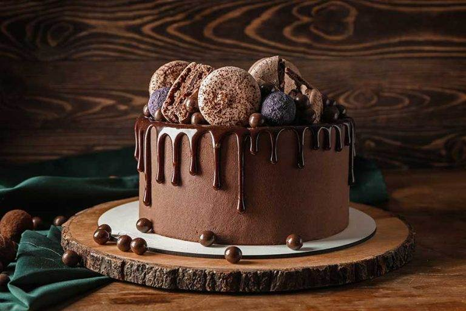

Breakfast Recipes
Pancakes

Ingredients:
- 2 cups all-purpose flour
- 2 tablespoons sugar
- 2 teaspoons baking powder
- 1 teaspoon baking soda
- 1/2 teaspoon salt
- 2 cups buttermilk
- 2 large eggs
- 1/4 cup melted butter
Instructions:
- In a bowl, mix the dry ingredients together.
- In another bowl, whisk the wet ingredients together.
- Combine the dry and wet ingredients and mix until smooth.
- Heat a griddle over medium heat and grease it lightly.
-
Pour batter onto the griddle and cook until bubbles form on the
surface.
- Flip and cook until golden brown on the other side.
Lunch Recipes
Grilled Cheese Sandwich

Ingredients:
- 2 slices of bread
- 2 slices of cheese
- Butter
Instructions:
- Butter one side of each slice of bread.
-
Place one slice of bread, buttered side down, on a skillet over
medium heat.
-
Top with cheese and the other slice of bread, buttered side up.
-
Cook until the bread is golden brown and the cheese is melted,
flipping once.
Dinner Recipes
Spaghetti Bolognese

Ingredients:
- 200g spaghetti
- 2 tablespoons olive oil
- 1 onion, chopped
- 2 garlic cloves, minced
- 400g ground beef
- 1 can of tomatoes
- 2 tablespoons tomato paste
- 1 teaspoon dried oregano
- Salt and pepper to taste
Instructions:
- Cook the spaghetti according to package instructions.
-
Heat olive oil in a pan and sauté the onion and garlic until
softened.
- Add the ground beef and cook until browned.
-
Stir in the tomatoes, tomato paste, and oregano. Simmer for 20
minutes.
- Season with salt and pepper.
- Serve the sauce over the spaghetti.
Dessert Recipes
Chocolate Cake

Ingredients:
- 1 and 3/4 cups all-purpose flour
- 1 and 1/2 cups sugar
- 3/4 cup cocoa powder
- 1 and 1/2 teaspoons baking powder
- 1 and 1/2 teaspoons baking soda
- 1 teaspoon salt
- 2 large eggs
- 1 cup milk
- 1/2 cup vegetable oil
- 2 teaspoons vanilla extract
- 1 cup boiling water
Instructions:
- Preheat your oven to 350°F (175°C) and grease a cake pan.
- In a large bowl, combine the dry ingredients.
-
Add the eggs, milk, oil, and vanilla, and beat on medium speed for
2 minutes.
- Stir in the boiling water (batter will be thin).
- Pour the batter into the prepared pan.
-
Bake for 30-35 minutes, or until a toothpick inserted into the
center comes out clean.